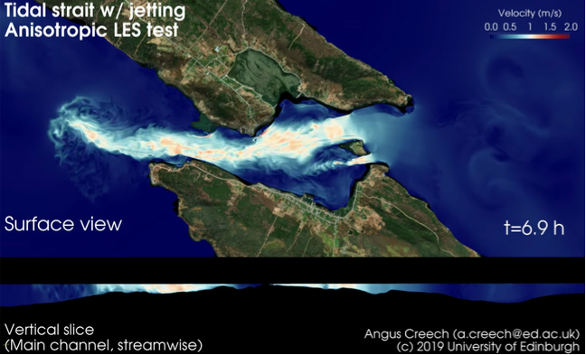

Using CoastED (a computational fluid dynamics software package tailored and optimised for modelling coastal currents at the local scale, ie. 10-100 km, whilst also resolving engineering scales, ie. smaller than 1 m), simulations modelling tidal currents at sites considered viable for tidal energy have been undertaken on Cirrus. Tidal currents at viable tidal energy sites are generally extremely strong, with peak flow speeds of 2-3 m/s. Such flow is extremely turbulent, often with Reynolds numbers of 10,000,000 or higher. This requires a specialised version of Large Eddy Simulation turbulence algorithm, which deals with highly anisotropic, non-hydrostatic flow, and as a result is capable of producing an unparalleled level of detail and information on the fluid dynamics being studied. These simulations allow a detailed understanding of the potential energy in the modelled tidal sites, the best positions for installing turbines for optimal energy extraction, simulation of engineering stresses on turbine structures, and impacts of placement on seabeds.

Acknowledgement
This work used the Cirrus UK National Tier-2 HPC Service at EPCC funded by the University of Edinburgh and EPSRC (EP/P020267/1). (http://www.cirrus.ac.uk)
Contact Us
If you are interested in creating a case study highlighting your work on Cirrus then please do not hesitate to contact the support team.